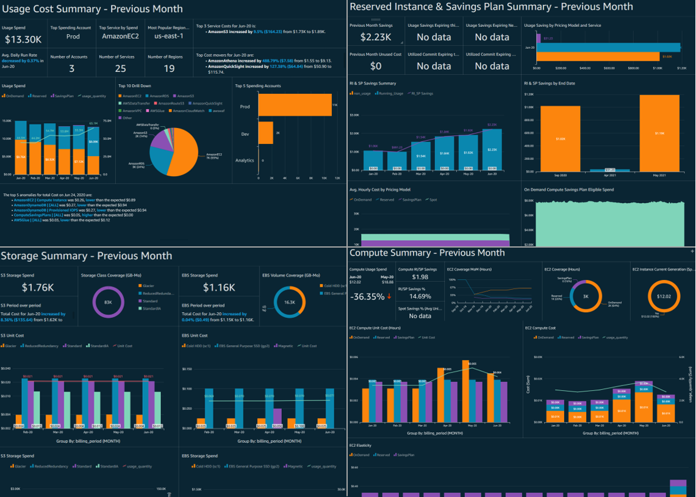
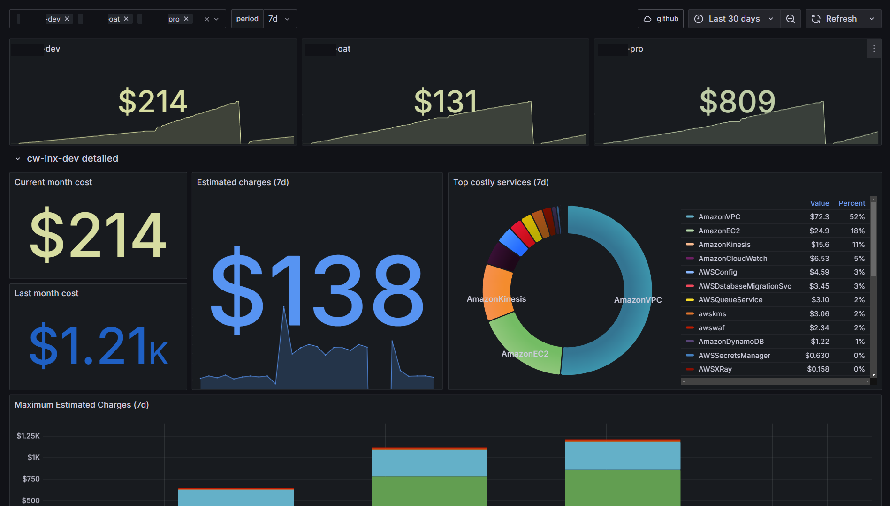

The Numbers
Black Friday 2023: $127,000 AWS spend over 5 days. Black Friday 2024: $61,000 with 3x more traffic. That's a 52% cost reduction while handling triple the load. Here's exactly how we did it.

Full Cost Breakdown by Service
| AWS Service | 2023 Cost | 2024 Cost | Savings | Strategy |
|---|---|---|---|---|
| EKS Compute (EC2) | $68,000 | $28,000 | -59% | Karpenter + Spot |
| RDS (Aurora) | $22,000 | $12,000 | -45% | Aurora Serverless v2 |
| Data Transfer + CloudFront | $18,000 | $8,000 | -56% | Aggressive caching + Brotli |
| ElastiCache | $9,500 | $6,200 | -35% | Right-sizing after profiling |
| NAT Gateway | $5,200 | $2,800 | -46% | VPC endpoints |
| Other (S3, SQS, Lambda, etc.) | $4,300 | $4,000 | -7% | Minor optimizations |
| Total | $127,000 | $61,000 | -52% |
Strategy 1: Karpenter + Spot Instances ($68K → $28K)
In 2023, we used Cluster Autoscaler with 3 node groups, all on-demand. Scale-up took 3+ minutes during traffic spikes, so we over-provisioned to compensate. We were running 40% more capacity than needed "just in case."

For 2024, we migrated to Karpenter with aggressive spot usage:
apiVersion: karpenter.sh/v1
kind: NodePool
metadata:
name: black-friday-workloads
spec:
template:
spec:
requirements:
- key: karpenter.sh/capacity-type
operator: In
values: ["spot", "on-demand"]
- key: karpenter.k8s.aws/instance-category
operator: In
values: ["m", "c", "r"]
- key: karpenter.k8s.aws/instance-generation
operator: Gt
values: ["4"]
- key: karpenter.k8s.aws/instance-size
operator: In
values: ["xlarge", "2xlarge", "4xlarge"]
nodeClassRef:
group: karpenter.k8s.aws
kind: EC2NodeClass
name: default
disruption:
consolidationPolicy: WhenEmptyOrUnderutilized
consolidateAfter: 120s
budgets:
- nodes: "15%"
limits:
cpu: "500"
memory: "1000Gi"Key changes that drove the savings:
- 75% spot usage: Karpenter diversified across 18 instance types, keeping spot interruption rate under 3%
- Right-sized nodes: Karpenter picked the exact instance size needed instead of our pre-defined xlarge-only groups
- Fast consolidation: After each traffic spike, Karpenter consolidated underutilized nodes within 2 minutes
- 45-second scale-up: No more over-provisioning "just in case" — Karpenter scaled fast enough to handle spikes
Strategy 2: Aurora Serverless v2 ($22K → $12K)
In 2023, we ran Aurora provisioned instances: db.r6g.4xlarge (16 vCPU, 128GB RAM) scaled up 2 days before Black Friday and kept running for the full 5 days. Peak usage was only 4 hours per day. We paid for 120 hours of max capacity but only needed 20 hours.
Aurora Serverless v2 scales in 0.5 ACU increments (1 ACU = ~2GB RAM). It scales to zero between spikes:
resource "aws_rds_cluster" "main" {
cluster_identifier = "ecommerce-prod"
engine = "aurora-postgresql"
engine_mode = "provisioned" # Serverless v2 uses provisioned mode
engine_version = "15.4"
serverlessv2_scaling_configuration {
min_capacity = 2 # minimum 2 ACUs (4GB RAM)
max_capacity = 128 # max 128 ACUs (256GB RAM)
}
}
resource "aws_rds_cluster_instance" "main" {
count = 2 # writer + reader
identifier = "ecommerce-prod-${count.index}"
cluster_identifier = aws_rds_cluster.main.id
instance_class = "db.serverless"
engine = aws_rds_cluster.main.engine
}Strategy 3: CloudFront Aggressive Caching + Brotli ($18K → $8K)
Data transfer was our third-largest cost. Two changes cut it by 56%:
Aggressive Cache Policy
We increased cache TTLs for static assets and product images. Cache hit ratio went from 72% to 94%:
resource "aws_cloudfront_cache_policy" "aggressive" {
name = "black-friday-aggressive"
min_ttl = 3600 # 1 hour minimum
default_ttl = 86400 # 24 hours default
max_ttl = 604800 # 7 days maximum
parameters_in_cache_key_and_forwarded_to_origin {
cookies_config {
cookie_behavior = "none" # don't vary cache by cookies
}
headers_config {
header_behavior = "none"
}
query_strings_config {
query_string_behavior = "whitelist"
query_strings {
items = ["v"] # only cache-bust param
}
}
enable_accept_encoding_brotli = true
enable_accept_encoding_gzip = true
}
}Brotli Compression
Brotli compresses 15-20% better than gzip for text content. For our product API responses (JSON), average response size dropped from 12KB to 3.2KB. With 850 million API responses over 5 days, that's 7.5TB less data transfer.
Strategy 4: ElastiCache Right-Sizing ($9.5K → $6.2K)
We were running cache.r6g.2xlarge (6 nodes) based on a capacity estimate from 2022. After profiling actual hit rates and memory usage:
- Peak memory usage: 38GB across the cluster (we had 156GB provisioned)
- Cache hit rate: 97.2% (excellent — no need for more memory)
- Hot key analysis: 80% of reads hit 5% of keys
We downsized to cache.r6g.xlarge (6 nodes, 78GB total) — still 2x our peak usage for safety margin. Saved $3,300 over the 5-day period.
Strategy 5: VPC Endpoints ($5.2K → $2.8K)
NAT Gateway charges $0.045/GB for data processing. Our services were making millions of API calls to S3 and DynamoDB through the NAT Gateway. VPC Gateway Endpoints for S3 and DynamoDB are free — traffic stays on the AWS backbone.
resource "aws_vpc_endpoint" "s3" {
vpc_id = module.vpc.vpc_id
service_name = "com.amazonaws.us-east-1.s3"
vpc_endpoint_type = "Gateway"
route_table_ids = module.vpc.private_route_table_ids
}
resource "aws_vpc_endpoint" "dynamodb" {
vpc_id = module.vpc.vpc_id
service_name = "com.amazonaws.us-east-1.dynamodb"
vpc_endpoint_type = "Gateway"
route_table_ids = module.vpc.private_route_table_ids
}We also added Interface Endpoints for ECR, CloudWatch, and STS — these cost $7.20/month each but eliminated ~2TB of NAT Gateway data processing over the 5 days.
Pre-Event Preparation
6 Weeks Before: Planning
Reviewed 2023 cost breakdown. Identified top 5 cost drivers. Set target: 40% reduction (we achieved 52%). Assigned owners to each optimization strategy.
4 Weeks Before: Implementation
Migrated to Aurora Serverless v2. Deployed Karpenter NodePools. Configured CloudFront cache policies. Set up VPC endpoints. All changes tested in staging first.
2 Weeks Before: Load Testing
Ran load tests simulating 3x 2023 peak traffic using k6. Validated Karpenter scale-up behavior. Confirmed Aurora Serverless scaling response time (<30 seconds to double ACUs). Identified and fixed a connection pool bottleneck.
1 Week Before: Warm-Up
Pre-warmed Karpenter by setting higher NodePool minimums. Pre-scaled Aurora to 32 ACUs baseline. Populated CloudFront cache with product catalog pages. Set up real-time cost dashboards in Grafana.
Day Of: Monitoring
War room with SRE team. Real-time dashboards showing cost per hour, Karpenter node count, Aurora ACU usage, cache hit ratio. Slack alerts for cost anomalies (>120% of hourly budget).
Scheduled Scaling with Terraform
For predictable traffic patterns (midnight lull, 10 AM spike), we used scheduled scaling to pre-provision capacity:
# Pre-scale Karpenter NodePool limits before peak hours
resource "aws_autoscaling_schedule" "pre_scale_morning" {
scheduled_action_name = "black-friday-morning-scale"
autoscaling_group_name = "karpenter-warm-pool"
min_size = 15
max_size = 80
desired_capacity = 25
recurrence = "0 8 * * *" # 8 AM UTC
time_zone = "America/New_York"
}
resource "aws_autoscaling_schedule" "scale_down_night" {
scheduled_action_name = "black-friday-night-scale"
autoscaling_group_name = "karpenter-warm-pool"
min_size = 5
max_size = 80
desired_capacity = 8
recurrence = "0 2 * * *" # 2 AM UTC
time_zone = "America/New_York"
}Real-Time Cost Monitoring
We built a Grafana dashboard pulling from AWS Cost Explorer API (via a Lambda function that runs every 15 minutes):
Lessons Learned
Start 6 weeks before, not 1 week. Aurora Serverless v2 migration alone took 2 weeks (schema compatibility testing, connection pool tuning, failover testing). Rushing infrastructure changes before a peak event is how you create incidents.
Load test with realistic data. Our first load test used synthetic data and showed no issues. When we tested with production-like data (varied product catalog, real session patterns), we found a connection pool exhaustion bug that would have caused a 15-minute outage during peak.
Cache everything you can. The single highest-ROI change was increasing CloudFront cache TTLs. Zero code changes, 30 minutes of configuration, $10,000 saved. Product images don't change during Black Friday — cache them for 7 days.
Don't forget NAT Gateway costs. NAT Gateway is the silent budget killer. At $0.045/GB, high-throughput services talking to AWS APIs can rack up thousands in data processing fees. VPC endpoints are free (Gateway type) or cheap (Interface type) and eliminate this entirely.
52% cost reduction isn't magic. It's 5 targeted optimizations, each addressing a specific cost driver: compute (Karpenter + Spot), database (Aurora Serverless v2), data transfer (CloudFront + Brotli), caching (right-sizing), and networking (VPC endpoints). Start with your Cost Explorer breakdown, identify the top 5 line items, and optimize each one. The biggest wins are always in compute and data transfer.